没有基础，何来进阶，知识体系环环相扣，没有夯实的基础，你就会碰到这样那样难以解决的问题。所以，对于与自控相关的基础内容，大家应该拿出时间去熟悉掌握。本文整理了些关于浮点数的内容，以供交学。
1.浮点数描述
浮点数，通俗的讲就是显示格式具有小数点的数，如1.234、1234.0（十进制形式）。计算机中浮点数会按照某一处理标准存储在单元中（如IEEE 754标准），其复杂度远大于其它类型的数据。
通常对于要么很大或很小的浮点数，难以用十进制形式方便地编写，则使用科学记数法来表示：即由一个有效数字（尾数mantissa）和幂数（exponent）组合而成，通常是乘以基数为10的整数次指数得到。
其中尾数应满足1≤|mantissa|≤10（通过调整10的指数大小使得mantissa的绝对值至少为1但小于10）。如STEP 7-MicroWIN SMART中浮点数0.00001234显示为1.234E-05：
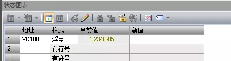
如一个电子的质量大约是0.000 000 000 000 000 000 000 000 000 000 910 938 356 kg。如果用一般的方法，将所有位数都写出来，很难直接确知它的大小，还会浪费很多空间。但使用科学记数法，写为9.109 383 56 × 10^-31 kg，相对要简单得多，数的数量级、精确度和数值都一目了然。
有效数字:指科学计算中用以表示一个浮点数精度的那些数字。一般地，指一个用小数形式表示的浮点数中，从第一个非零的数字算起的所有数字。如1.24和0.00124的有效数字都有3位。包含小数点的数中，结尾的零是有效的。例如 12.2300 有六位有效数字（1、2、2、3、0、0）。
2.IEEE二进制浮点数算术标准（IEEE 754）
该标准定义了五种基本格式，有三种二进制浮点基本格式（用32,64或128位编码）和两种十进制浮点基本格式（用64或128位编码）。如PLC中常使用的单精度二进制浮点格式：binary32，双精度二进制浮点格式：binary64。
一个浮点数 (Value) 可以这样表示：
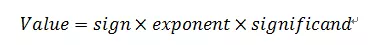
也就是浮点数的实际值，等于符号位（sign bit）乘以指数值(exponent)再乘以有效数(significand)。
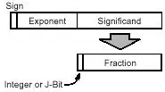
二进制浮点数是以符号数值表示法的格式存储：最高有效位被指定为符号位（sign bit）；“指数部分”即次高有效的e个比特存储指数部分；最后剩下的f个低有效位的比特，存储“有效数”（significand）的小数部分（fraction）。
单精度浮点格式
在IEEE 754中定义单精度浮点数格式是一种：在计算机存储器中占用4个字节（32 bits），利用“浮点”（浮动小数点）的方法，表示一个范围很大的数值，称为binary32格式。

标准规定binary32具有：
- 符号位：1位（0代表正，1代表负）
- 指数存储宽度：8位
- 有效数存储宽度：23位（真有效数包括二进制点右侧的23个分数位（及真有效数的小数部分）和值为1的隐式前导位（位于二进制点的左侧，及真有效数的整数部分）。因此，只有23 个小数位的有效位被存储，但总精度是24位）
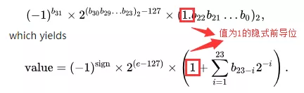
单精度浮点数的指数域是8位，存储值为0～255。标准规定固定偏移值是28-1-1=128-1=127，则单精度浮点数的指数部分实际取值是从0-127=-127到255-127=128（-127和128被用作特殊值处理，包括“非规约形式的浮点数”和“特殊值”）。
采用指数的实际值加上固定的偏移值的办法（指数偏移）表示浮点数的指数，好处是可以用长度为e个比特的无符号整数来表示所有的指数取值，这使得两个浮点数的指数大小的比较更为容易，因为非负数的比较完全可以从最高有效位遍历比较。
以上面的0.15625二进制存储值为例转为浮点数(Value)：
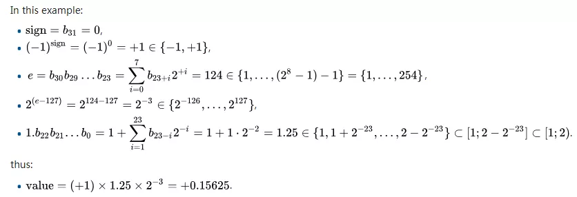
规约形式的浮点数
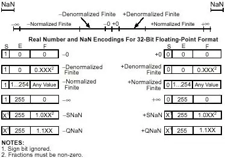
如果浮点数中指数部分的编码值在 0<exponent≤2e-2 之间（单精度浮点数e=8），那么这个浮点数称为规约形式的浮点数（Normalized finite numbers）。
最小正规约浮点数：
0 00000001 000000000000000000000002 = 0080 000016 = 2 -126 ≈1.1754943508×10^-38
最大正规约浮点数：
0 11111110 111111111111111111111112 = 7f7f ffff16 = 2 127 ×（2 - 2 -23）≈3.4028234664×10^38
非规约形式的浮点数
如果浮点数的指数部分的编码值是0（因为非规格数的指数是固定的exponent = 2-126，于是也就不用存储指数，因此编码值全为0，这也方便和规约形式的浮点数分开），分数部分非零，那么这个浮点数将被称为非规约形式的浮点数（Denormalized finite numbers）。
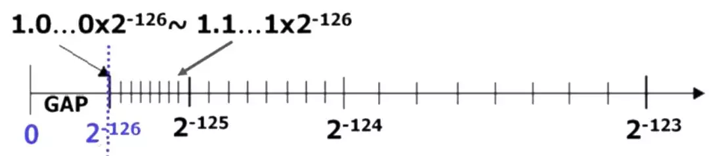
一般是某个数字非常接近零时才会使用非规约型式来表示。其绝对值已经小于所有的规约浮点数的绝对值，即所有的非规约浮点数比规约浮点数更接近0，即上图GAP范围内的数。对于规约浮点数，其有效数（significand=1+fraction）大于等于1且小于2（因为隐式前导位为1），而非规约浮点数的有效数（significand=fraction）小于1且大于0（因为隐式前导位为0）。
如STEP 7-MicroWIN SMART，从手册中给出的数值范围可知，S7-200 SMART PLC无法处理非规约形式的浮点数
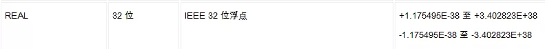
值2#0000_0000_0011_0000_0000_0000_0000_0000，对应非规约形式的浮点数为4.408104E-039，其显示为NAN（作为溢出处理）。
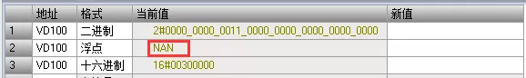
对于WINCC，可以处理非规约形式的浮点数，这一点要了解。
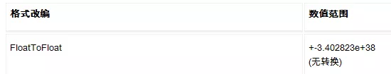
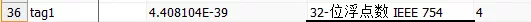
特殊值
除了规约和非规约数，还包括一些特殊值：
- 如果指数 = 0并且尾数的小数部分是0，这个数为±0（和符号位相关）
- 如果指数 = 2e-1并且尾数的小数部分是0，这个数是±∞（同样和符号位相关），如STEP 7-MicroWIN SMART中显示为±INF。
- 如果指数 = 2e-1并且尾数的小数部分非0，这个数表示为一个非法数（NaN）。
精度
任何数据的存储长度是有限的，单精和双精浮点数的有效数字分别是有存储的23和52个位，加上最左边没有存储的1个隐式前导位，即是24和53个位。
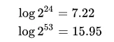
舍入
任何有效数上的运算结果，通常都存放在较长的寄存器中，当结果被放回浮点格式时，必须将多出来的比特丢弃。 有多种方法可以用来运行舍入作业，实际上IEEE标准列出4种不同的方法：
- 舍入到最接近：舍入到最接近，在一样接近的情况下偶数优先（Ties To Even，这是默认的舍入方式）：会将结果舍入为最接近且可以表示的值，但是当存在两个数一样接近的时候，则取其中的偶数（在二进制中是以0结尾的）。
- 朝+∞方向舍入：会将结果朝正无限大的方向舍入。
- 朝-∞方向舍入：会将结果朝负无限大的方向舍入。
- 朝0方向舍入：会将结果朝0的方向舍入。